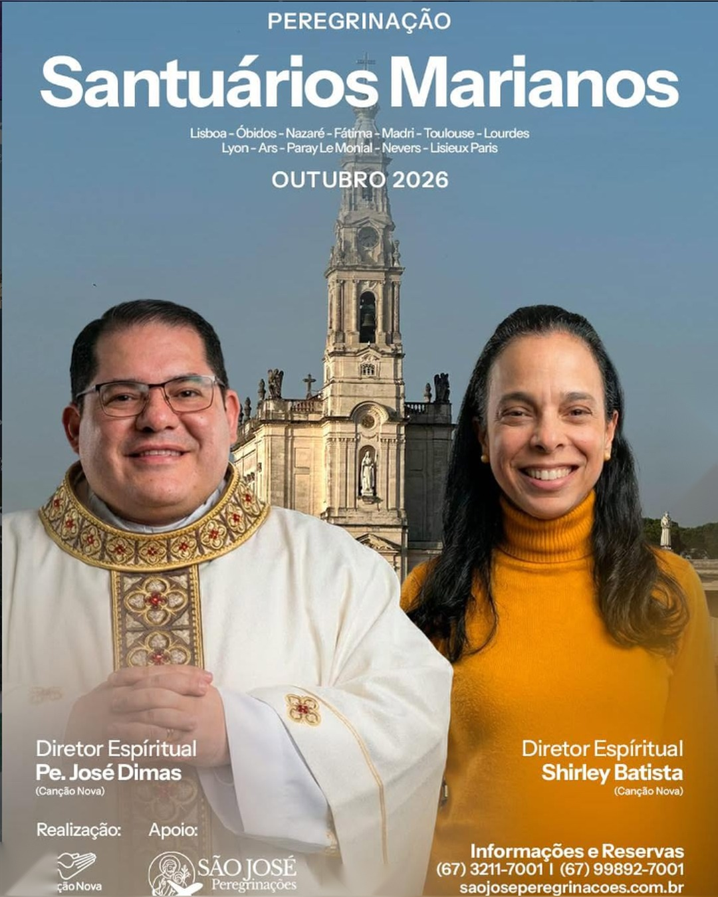

Porto, Braga, Viana do Castelo, Gerês, Coimbra, Fátima, Nazaré, Alcobaça, Tomar e Lisboa. Com Padre Orozimbo de Paula Júnior, SDB.
Datas: 09 a 20 de Outubro de 2026.
Visitas e atividades religiosas no roteiro de Porto, conforme programação do grupo.
Visitas e atividades religiosas no roteiro de Braga, conforme programação do grupo.
Visitas e atividades religiosas no roteiro de Viana do Castelo, conforme programação do grupo.
Visitas e atividades religiosas no roteiro de Gerês, conforme programação do grupo.
Visitas e atividades religiosas no roteiro de Coimbra, conforme programação do grupo.
Visitas e atividades religiosas no roteiro de Fátima, conforme programação do grupo.
Visitas e atividades religiosas no roteiro de Nazaré, conforme programação do grupo.
Visitas e atividades religiosas no roteiro de Alcobaça, conforme programação do grupo.
Visitas e atividades religiosas no roteiro de Tomar, conforme programação do grupo.
Visitas e atividades religiosas no roteiro de Lisboa, conforme programação do grupo.
Visitas e atividades religiosas no roteiro de Porto, conforme programação do grupo.
Visitas e atividades religiosas no roteiro de Braga, conforme programação do grupo.
Entre em contato para confirmar disponibilidade e receber mais informações.
Solicitar via WhatsApp Formulário de Contato